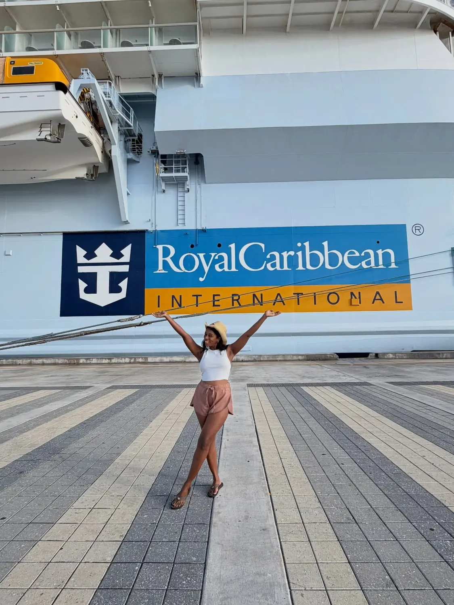
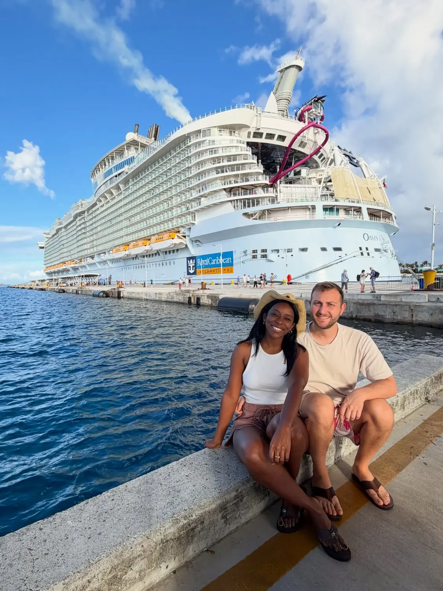

Una ciudad flotante01
Embarcando en el Oasis of the Seas
Ver el Oasis of the Seas en el muelle por primera vez es otra cosa: es más alto que todo lo que lo rodea. El embarque es rápido y organizado, y desde el momento en que subes hay algo que hacer a cada minuto.